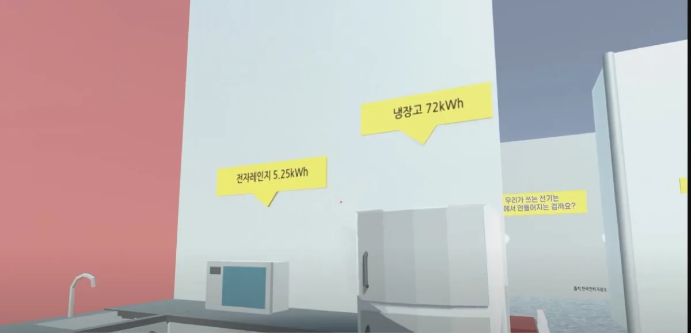
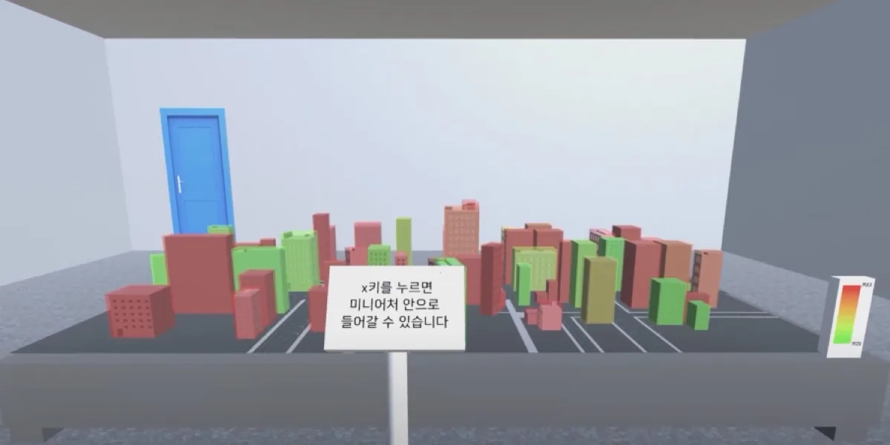
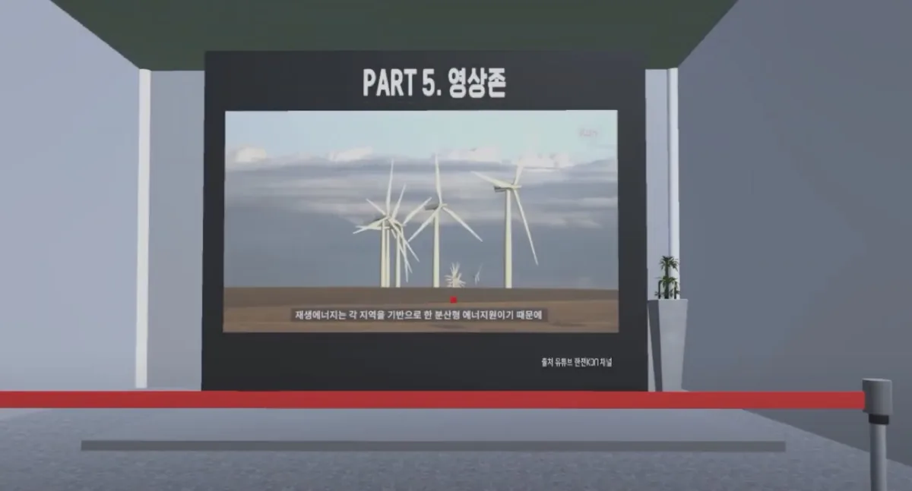

한전KDN 주관 「데이터 결합·활용 아이디어 및 사업모델 공모전」에서 아이디어 분야 장려상을 받았습니다. 팀명은 ‘강화유리’입니다.
메타버스 에너지 전시관
전시관에 갈 수 없는 사람도 에너지 데이터를 둘러볼 수 있게 만든 가상 전시관입니다. 4인 팀의 팀장으로 기획을 맡았고, 한전KDN 공모전에서 장려상을 받았습니다.

프로젝트 소개
“에너지 데이터는 공개돼 있는데, 왜 아무도 보지 않는가.” 공공 API의 에너지 데이터는 표와 수치로만 있었습니다. 이 프로젝트는 그 데이터를 걸어 들어가 볼 수 있는 공간으로 바꾸는 시도였습니다.
코로나19나 거리 때문에 전시관에 가기 어려운 사람을 위한 가상 전시관입니다. 국토교통부, 에너지경제연구원, 한국전력거래소의 공개 데이터를 전시물로 만들었습니다.
팀과 담당 범위
- 팀장 — 기획 및 팀 리딩
- 프론트엔드 개발 — 기여도 50%
- 아이디어 제공 및 개발 방향 설정 — 기여도 40%
- 백엔드 개발 — 기여도 10%
공모전은 아이디어 분야로 출품해, 구현물보다 “왜 이 데이터를 공간으로 보여줘야 하는가”를 설명하는 일이 팀장의 몫이었습니다. 전시 동선과 각 존에서 알게 될 것을 먼저 정하고 화면을 나눴습니다.
관람 동선 설계
가장 크게 다른 점은 시점입니다. 1인칭으로 전시관에 입장해 걸어 다니며 보고, 시선 이동에 따라 화면이 바뀝니다.
걸어서 이동하다 보니 관람자는 자기가 고른 순서대로 전시물을 봅니다. 그래서 전시물마다 앞뒤 설명 없이도 그 자리에서 읽히게 만들었습니다.
주요 기능
1. 반응형 전시물
모든 정보를 벽에 붙여 두면 읽지 않고 지나치기 때문에, 궁금한 전시물을 눌렀을 때 자세한 값이 열리게 했습니다.
2. 데이터 전시물

3. 체험 존

체험 존의 핵심은 축척 전환입니다. 모형을 내려다보던 관람자가 x키를 누르면 모형 안으로 들어가, 같은 도시를 건물 사이에서 다시 봅니다. 진입 방법은 모형 바로 앞 안내판에 적어 뒀습니다.
4. 영상 존

존마다 PART 번호를 스크린 상단에 붙였습니다. 자유롭게 돌아다니는 구조라 지금 몇 번째 존인지 공간 안에서 알 수 있게 했습니다.
수상
사용 기술
1인칭으로 걸어 다니는 3D 공간이 전제여서 웹 대신 Unity를 골랐습니다. 이동과 충돌, 시선 기반 화면 전환은 엔진에 맡겨, 4명이 6주 안에 전시관을 채울 수 있었습니다.
돌아보며
가장 오래 붙잡은 질문은 “이 데이터를 왜 공간으로 봐야 하는가”였습니다. 표로 충분한 데이터를 3D로 옮기면 오히려 읽기 어려워져서, 가전제품 옆 소비 전력이나 축척 전환처럼 공간이어야 의미가 있는 것만 남겼습니다.
팀장으로 처음 한 프로젝트였습니다. 각자 파트에서 내린 판단을 하나의 동선으로 묶는 일이 제 역할이었습니다.